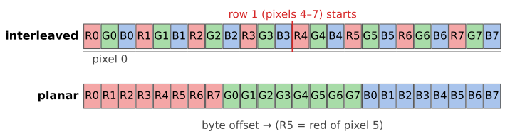
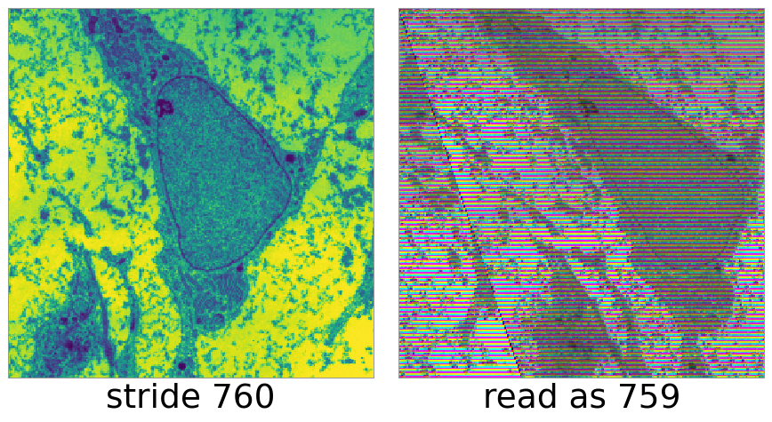
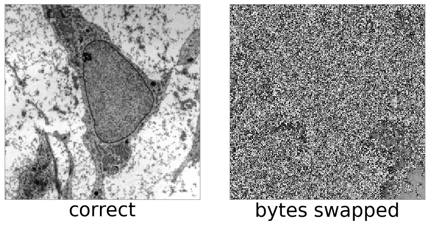
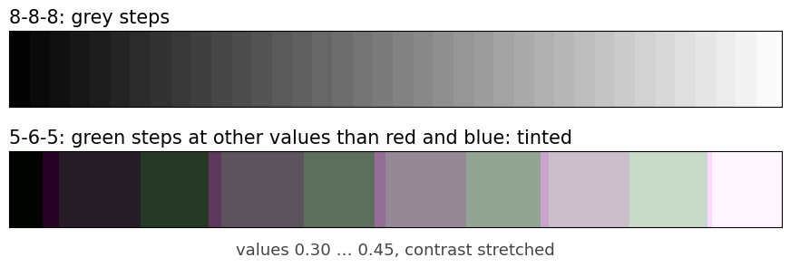
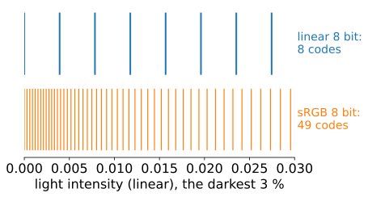
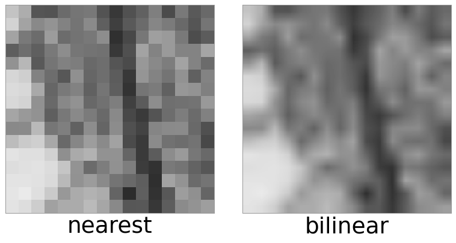
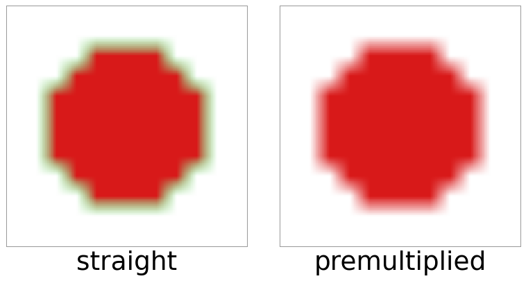
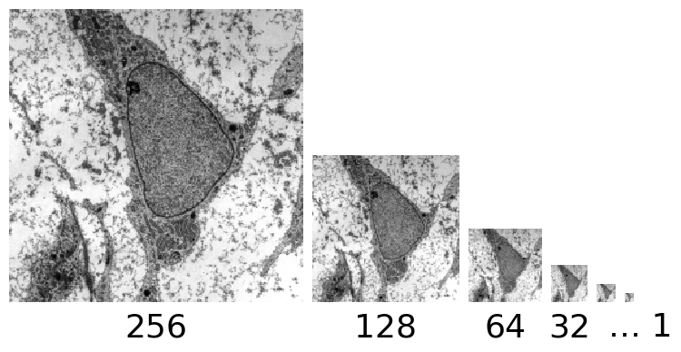

An image in memory is one long row of bytes. Where is pixel (x, y), channel c?
Layouts: interleaved or planar, channel order, row padding, byte order.
A graphics card (GPU) stores images as textures in a choice of formats: normalised integers, plain integers, floats, packed bits, sRGB. What does each keep, and what does it cost?
The GPU also interpolates (filters) between pixels in hardware. Which formats allow it, and why the stored numbers must be “linear” for it to be right.
Slides titled The math give the formulas and proofs; the ideas are complete without them.
An image is a row of bytes
A 4 × 2 RGB image, 8 bits per channel, pixels numbered 0–7 row by row:

Interleaved keeps one pixel’s channels together: what screens, cameras and textures use.
Planar keeps one channel together: convenient when each channel is processed alone (e.g. a microscope with one image per fluorescent dye).
Channel order is a convention: RGBA or BGRA (common in camera drivers and on Windows). Swap it by mistake and red and blue trade places.
Rows are padded: the stride
Hardware likes rows that start at a multiple of 4 (or more) bytes. Each row may end with unused padding bytes.
Stride (pitch) = bytes from the start of one row to the start of the next, including padding.
An RGB image 1001 pixels wide: 3 \cdot 1001 = 3003 bytes of data per row, padded to a stride of 3004.
Read it with the wrong stride (3003) and row y is read starting y bytes too early: the image is sheared by a third of a pixel per row, and the colours cycle from row to row (each byte is read as the wrong channel).
Always ask an image buffer for its stride; do not compute it from the width.

Bytes in a multi-byte number: endianness
A 16-bit value occupies two bytes. Which comes first?
Little-endian (almost all CPUs and GPUs today): low byte first. 1000 = 0x03E8 is stored as E8 03.
Read little-endian data as big-endian and 1000 becomes 0xE803 = 59 395: a smooth image turns into noise-like garbage, because the low byte changes fastest.
Image file formats state their byte order in the header; 8-bit images do not have the problem.

The math: where is a pixel?
For an image of width w, height h, C channels of B bytes each, and row stride s \ge w C B, the byte offset of pixel (x, y), channel c is
where s_1 \ge w B is the stride of one plane. The total size is h\,s (interleaved) or C\,h\,s_1 (planar). The matrix index (i, j) of earlier units is (row y, column x); memory is “row-major”: a row is contiguous.
Texture formats: what a stored number means
A GPU texture has a declared format. Three families:
family
stored
the shader reads
example
normalised
integer k, b bits
k/(2^b - 1), a number in [0, 1]
8 bit per channel (RGBA8)
integer
integer k
k itself
16-bit unsigned integer
float
IEEE float
the float
half float (16 bit), float32
Normalised formats make “8 bits” and “10 bits” look the same to the program: both give [0, 1], only the step differs.
Integer formats are exact (labels, raw camera counts), but the hardware cannot interpolate them.
Float formats keep values outside [0, 1], and precision relative to the value (floating-point unit).
Packed formats: bits shared out
When memory or bandwidth is tight, channels get unequal numbers of bits in one 16- or 32-bit word:
5-6-5: red 5 bits, green 6, blue 5 = 16 bits per pixel. Green gets the extra bit because the eye is most sensitive to green (colour day). A grey ramp gets tinted steps, because green steps at different places than red and blue.
10-10-10-2: 10 bits per colour, 2 bits of alpha = 32 bits, the same memory as 8 bits per channel, but 4 times finer steps. Used for HDR displays and medical monitors.

Try it: the same data in different formats
sRGB storage: more codes for the dark
Light intensities and perceived brightness are not proportional: we notice small differences in dark tones much more than in bright ones.
An sRGB-encoded 8-bit value is not proportional to light: the 256 codes are spaced closely in the dark and widely in the bright. Most 8-bit photos and screenshots are stored this way.
A linear value of 0.005 is code 1 in plain 8 bit, but code 16 in sRGB 8 bit.
An sRGB texture format tells the GPU so: it decodes to linear values when the shader reads the texture, before filtering or blending.
Why the curve has its shape, and why averaging must happen on linear values, is the subject of the colour day. Here: sRGB is a storage encoding, and the GPU undoes it for you if you declare it.

Filtering in hardware
When a texture is drawn larger or smaller than its pixels, the GPU interpolates for free:
Each pixel gets texture coordinates (u, v), interpolated perspective-correctly across its triangle (previous unit), and the texture is sampled there.
nearest: take the closest texel (blocky); linear: bilinear interpolation of the 4 nearest texels (as in the images unit).
Normalised and float formats can be filtered. Integer formats cannot: a texture with linear filtering and an integer format is “incomplete” and reads as black. (Interpolating label 3 and label 7 to give 5 would be wrong anyway.)
Filtering is a weighted average, so it is only right on values proportional to light: hence the sRGB decode first, and premultiplied alpha.

Premultiplied alpha
Alpha \alpha is opacity: 1 = opaque, 0 = fully transparent. A transparent pixel’s colour is meaningless but still stored.
Straight alpha stores (R, G, B, \alpha). Average an opaque red texel with a transparent green one: (0.5, 0.5, 0, 0.5): a half-transparent olive. Green leaks in from a pixel you cannot see: dark or coloured fringes around cut-out objects.
Premultiplied alpha stores (\alpha R, \alpha G, \alpha B, \alpha). The transparent green becomes (0, 0, 0, 0), and the average is (0.5, 0, 0, 0.5): half-transparent red, correct.
So filtering, blending and resizing images with transparency should work on premultiplied values.

The math: compositing and filtering with alpha
Drawing a source over a destination (“over” operator, Porter–Duff), with premultiplied colours \mathbf c = \alpha\,\mathbf C:
Both lines have the same form, so premultiplied values are filtered and blended with the same linear formula in every channel. A filter with weights w_i gives \sum w_i \alpha_i \mathbf C_i and \sum w_i \alpha_i; dividing, the true colour is the opacity-weighted average \sum w_i \alpha_i \mathbf C_i / \sum w_i \alpha_i, in which transparent texels have no say. Straight alpha would weight every \mathbf C_i equally.
Mipmaps and memory
A mipmap stores the texture at full, half, quarter, … size, down to 1 × 1. When the texture is drawn small, the GPU reads a pre-shrunk (pre-blurred) level instead of skipping pixels, which would alias (Fourier unit). Cost: +1/3 memory.

Memory = width × height × bytes per texel:
format, 4096 × 4096
bytes/texel
memory
with mipmaps
RGBA 8 bit
4
64 MiB
85.3 MiB
RGBA half float
8
128 MiB
170.7 MiB
RGBA float32
16
256 MiB
341.3 MiB
Compressed texture formats store 4 × 4 blocks in 4–8 bits per pixel, lossy, decoded in hardware.
The math: why mipmaps cost a third
Each level has a quarter of the texels of the one before:
For a 2^n \times 2^n texture the chain has n + 1 levels and \sum_{k=0}^{n} 4^{k} = (4^{n+1} - 1)/3 texels, just under \tfrac43 \cdot 4^n.
Summary
An image in memory: interleaved or planar, a channel order, a stride per row (with padding), and a byte order for multi-byte values. Get one wrong and the image is sheared, recoloured or scrambled.
Texture formats: normalised (k/(2^b - 1)), integer (exact, not filterable), float, packed (5-6-5, 10-10-10-2), sRGB (decoded by the GPU).
Hardware filtering is a weighted average: it needs linear, premultiplied values.
Memory = texels × bytes per texel (× 4/3 with mipmaps).